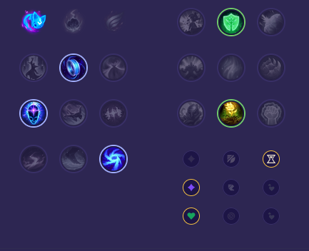

Starter: 2x Mikstura Zdrowia Core Bulid: Kolec Królestwa Zak'Zaka Ioniańske Buty Jasności Umysłu Kryształowy Kostur Rylai Full Bulid: Diadem Pieśni Echa Helii Morellonomicon

Słaby przeciwko: - Pyke - Nami - Janna - Sona - Tahm Kench - Milio Dobry przeciwko: - Pantheon - Rell - Swain - Zyra - Morgana - Mel